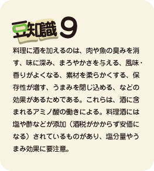

4.中華ダシ
中華だしの基本は、何といっても鶏がらスープ。鶏がらを湯通しし、大きな寸胴ナベに水を入れて鶏がらを加え、煮立たせる。そこに、ネギなどの香味野菜、にんにく、ショウガなどを加えて煮出す。しかし、これはプロの店の話。家庭では、市販のガラスープの素や貝柱スープの素、中華スープの素を使って簡便に済ませてしまうことが多いし、それで十分。料理に慣れてきたら、たまには鶏がらを買ってきて、本格的に作って、小分けして冷凍庫にストックしておくという手もあるので、とことんおいしさを追及したい方は一度お試しあれ。中華ダシの場合は、酒やしょうがを使うとグーっと味が引き立つ。酒は、紹興酒を使うとより本格的。
tofusoup写真：豆腐と生しいたけのスープ

豆腐と生しいたけのスープ（２人分）
- 材料
- もめん豆腐１００ｇ（１/３丁）
- しいたけ4枚
- ゆで竹の子４０ｇ
- ねぎ２０ｇ（１/４本）
- 鶏がらスープ(水2.5カップに鶏がらスープの素小さじ2.5を加える)
- しょうが１０ｇ
- 塩少々
- しょう油 小さじ2/3
- 酒大さじ 大さじ2/3
- 作り方
- ①豆腐は１ｃｍの厚さで４～５ｃｍの角切り。
- ②しいたけは軸（石づき）を除き、薄切り。
- ③竹の子は縦に薄切り、ネギは斜め切り。
- ④しょうがは薄切り。
- ⑤鍋にスープを入れて火に掛け、煮立ったら、しいたけ、竹の子を入れ、5分ほど煮る。
- ⑥しょう油、酒を加え、豆腐とねぎとしょうがを入れてひと煮立ち。味見をして塩少々を加えて火を止める。（ガラスープの素には塩分が入っているので、味見をしてから塩加減をする）
- グレードアップ
- 人参や絹さやを加えると、彩りがよくなる。はるさめや肉団子、白菜を入れてもよい。
上級編
これは少々手が込んでいるが本格中華で、ホントに旨い。中華独特の、甜面醤、豆板醤を使っているところがミソ。料理に自信がついてきたら、是非、チャレンジを。
mabo写真：麻婆豆腐
麻婆豆腐（２人分）
- 材料
- 豆腐２００ｇ（２/３丁）
- 豚ひき肉８０ｇ
- ねぎ２０ｇ（１/４本）
- にら２０ｇ
- にんにく(一片)
- しょうが少々
- サラダ油大さじ１
- ごま油少々
- 水溶き片栗粉：片栗粉小さじ２＋水大さじ１と１/3
-
調味料A
酒小さじ２
甜面醤（ﾃﾝﾒﾝｼﾞｬﾝ）小さじ2
豆板醤（ﾄｳﾊﾞﾝｼﾞｬﾝ）小さじ1
しょう油大さじ１砂糖小さじ2/3
ガラスープの素小さじ１
水１００ｃｃ（１/2カップ）>
- 作り方
- ①調味料Ａをボールに合わせておく。
- ②豆腐を１．５ｃｍの角切りにし、1分間熱湯で茹でて、ざるにあけて水を切っておく。
- ③ねぎ、にんにく、しょうがはみじん切り。にらは１ｃｍの長さに切る。
- ④中華なべ（フライパンでもよい）を熱して油を入れ、にんにく、しょうが、ねぎを炒める。香りが油に移ったら、豚ひき肉を加え、色が変わるまで炒める。
- ⑤ここに豆腐を加え、崩さないようにさっと炒める。
- ⑥合わせておいた調味料Ａを加え、木べらで３～４回混ぜて煮込む。
- ⑦にらを加えて混ぜ、水溶き片栗粉を加えて濃度をつける。仕上げにごま油を少量回しいれる。